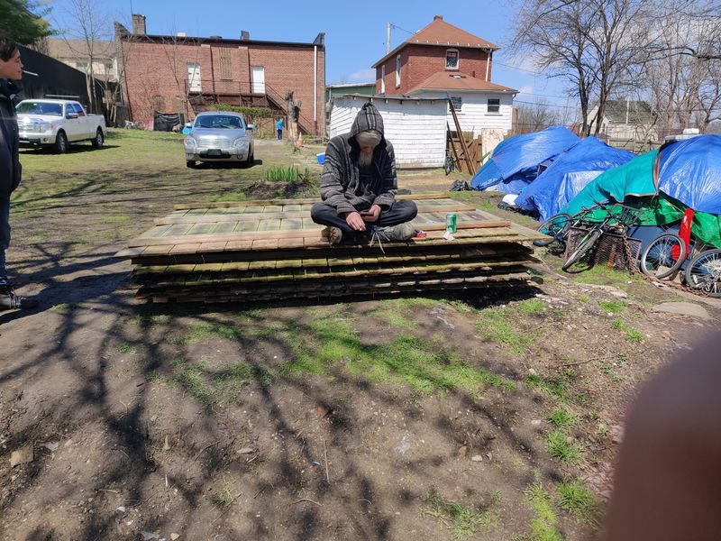

Timeline photos
I am going to vomit some thoughts here because I need your input...
The Church of the Nomadic Spirit has a house. The picture of it here is not great. But it's the house where people lived next to our first tent city and they sued me. Long story short: we settled with them and bought the house.
I am legally allowed to have 6 people live in that house. I got special permission to have a boarding house. (A regular house can only have 5 non-related people in it.) That was a lot of work for 1 extra person. But it is what it is.
I have been renting 3 bedrooms out of the house. I charge $300/month and that includes all utilities and internet access.
THE PROBLEM IS... because my focus is helping people who were recently homeless get into a home I often end up with challenging renters.
For example... right now 2 out of 3 of the rooms are being rented to people who have been in jail for the last month or so. So, they are basically sitting empty.
That is problematic on many levels. An empty room to a homeless person is basically like a moth to the light. It does not stay empty for long. And with tenant rights, along with the fact that I'm trying to make LESS people homeless, it's hard to get them out of the room once they get in.
So... this is where we are today.
We are entering into the cold season. People are starting to get really desperate. The winter homeless scene in Akron is tragic and torturous.
Here are some ideas I have...
Idea 1: Just board the whole house up. It's nearly impossible to keep control of it. Crazy stuff goes on in it. I don't have security to manage it. The bills are between $600-$1000/month because people are using the water and the electricity and the gas heat. Without paying renters I don't currently have enough money to keep it running.
Idea 2: I have 1 good renter. He pays every month. He's a veteran. I love him. I could just rent him the entire house for his $300 and let him manage it. I don't know if he could afford the utilities. I sort of doubt it. So, I'd have to turn to you to make up the difference in the utilities.
Idea 3: Have no renters and just make it a warming center. That is going to turn into a trap house. It's already pretty wild there. It will just get more wild. But more people could come into the house to stay warm. That would make my financial situation even worse.
Idea 4: I don't have an idea 4. But maybe you do.
What do you think I should do with this house?